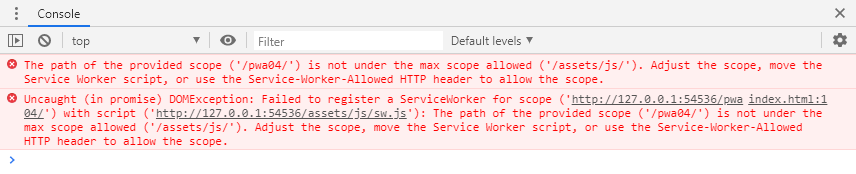

PWA de Exemplo 05
É possível alterar o escopo padrão do Service Worker no momento do seu registro, da forma que tentamos fazer aqui:
navigator.serviceWorker.register("../assets/js/sw.js", { "scope": "./" });.
Porém, como é possível perceber pelo erro mostrado no console, a tentativa não funcionou muito bem... Como estamos aumentando o escopo do Service Worker, o servidor deveria retornar um cabeçalho HTTP Service-Worker-Allowed dizendo que isso é permitido, o que não ocorre aqui 😢...
Isso funcionaria sem problemas, se estivéssemos diminuindo o escopo do Service Worker, ou seja, se o arquivo estivesse em algum diretório acima do diretório da página atual, e estivéssemos diminuindo o escopo dele para o diretório atual em diante.
Enfim, como não temos um Service Worker aqui, assim como o exemplo 04, o exemplo 05 não é um PWA válido 😢!
O código-fonte e as explicações podem ser encontradas no GitHub do projeto: github.com/tech-espm/labs-pwa 😊.